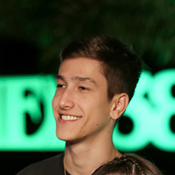

Bem vindo(a)!
Meu nome é Gabriel Ciraqui e sou estudante do curso de
ADS - Análise e Desenvolvimento de Sistemas do Instituto Federal do Triângulo Mineiro, em Uberaba. Entrei em 2020 para o curso de Engenharia de Computação mas não me identifiquei com o mesmo e resolvi transferir em 2023!
Currículo
Experiências
- Savana Comunicação (2017-2019)
- Trabalhei durante o período de 2017-2019 como designer gráfico para uma empresa pequena de Identidade Visual Digital
- Freelancer(2019-2021)
- Mudei pra goiânia e saí da empresa, comecei a trabalhar como freelancer para serviços de ID e criação/manipulação de imagens de forma geral.
- Scope Agencia(2022-Presente)
- Fui convidado por um amigo empreendedor que estava estruturando mais profissionalmente sua empresa de marketing depois de anos se aventurando em àreas afins para o cargo de designer gráfico. Hoje crescemos bastante e vejo cada vez mais potencial!
Soft e Hard Skills
- Photoshop(cs6->2023 Adobe Licensed)
- Comecei à muuitos anos a mexer com photoshop quando criava vídeos de minecraft para o Youtube e precisei aprender para além de fazer banners poder fazer thumbnail personalizadas, isso foi fazerndo com que eu desenvolvesse essa habilidade por praticar e procurar aprender de forma autodidata.
- Sony Vegas & Premiere Pro
- Como já disse anteriormente, tive um canal no youtube. E por isso também acabei aprendendo sobre edição de vídeos, nada muito aprofundado como na área do design porém consigo fazer edições em ambos os programas, antigamente usava Sony vegas e atualmente Premiere Pro e After effects.
- Comunicação e proatividade
- Sempre fui muito comunicativo, tenho facilidade em me expressar e gosto de argumentar por ter um bom raciocínio lógico, dedutivo e crítico. Além disso sou muito curioso o que me gera bastante motivação em assuntos os quais despertam meu interesse como a programação em suas diversas maneiras!